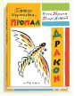

Глупая Шершилина, или Пропал дракон

Не успели Миша Коробкин и Лида Шершилина ступить на порог известного писателя и путешественника Мамонтова, как из-за этой глупой Шершилины пропал домашний любимец писателя - тритон, похожий на маленького дракона…О том, что вышло из этой курьёзной и невероятно запутанной истории, читателям расскажет весёлая повесть Нины Гернет и Григория Ягдфельда, мастерски проиллюстрированная Борисом Калаушиным.